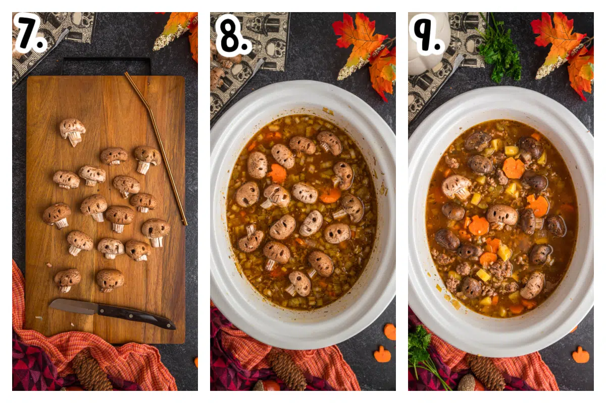

Witches Brew Stew

Description: stew asf
Ingredients:
- 1 cauldron of enchanted vegetable broth
- 2 cups of diced Mandrake root
- 1 cup of chopped Eye of Newt (small, round vegetables like green peas)
- 1 batwing-sized slice of ghost pumpkin
- 3 dragon-scale potatoes, peeled and cubed
- 1 pinch of powdered moonstone (for seasoning)
- 1 handful of enchanted thyme
Steps:
- In a large cauldron over a bewitched flame, pour in the enchanted vegetable broth.
- Add the diced Mandrake root, chopped Eye of Newt, ghost pumpkin, and dragon-scale potatoes.
- Stir in the powdered moonstone and sprinkle the enchanted thyme for added aroma.
- Simmer the concoction on low heat, stirring occasionally, until the vegetables are tender and the brew emits a mystical aroma.
- Serve in enchanted bowls under the light of a full moon for the most magical experience.